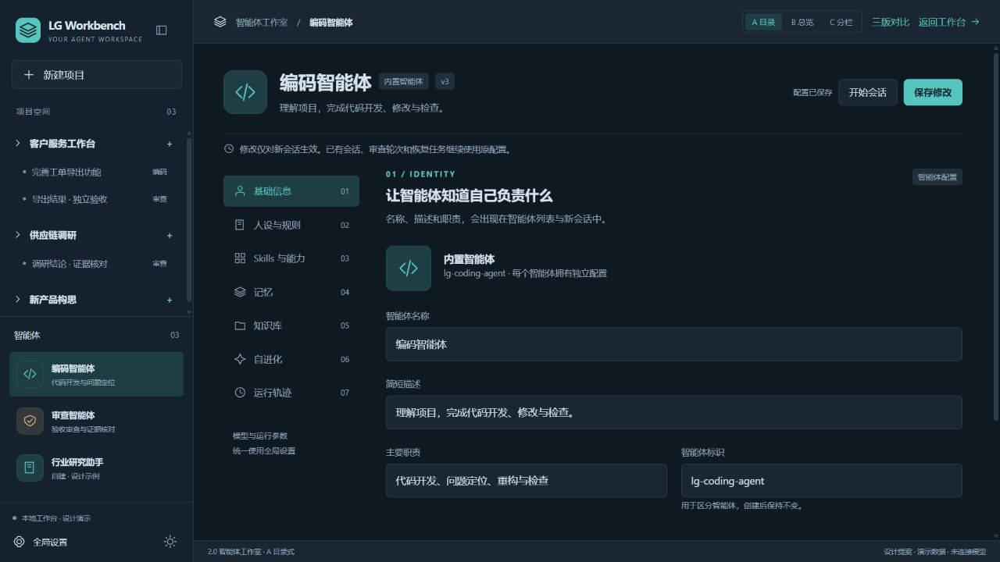

LG WORKBENCH / DESIGN EXPLORATION返回当前原型 →
AGENT STUDIO · 2.0
同一个智能体工作室，三种组织方式
沿用当前工作台的深蓝、蓝灰与青绿色。保留项目导航，每个智能体拥有自己的工作室。
点击任一设计进入操作，七个区域、项目范围、明暗主题都可切换。
三版相同规则
七个区域；全局模型与运行参数；保存修改仅用于新会话；自进化先看证据、再确认。
七个区域；全局模型与运行参数；保存修改仅用于新会话；自进化先看证据、再确认。
可以混合取舍
建议以 A 为基础，吸收 B 的改进提醒；项目范围复杂时，再加入 C 的说明侧栏。
建议以 A 为基础，吸收 B 的改进提醒；项目范围复杂时，再加入 C 的说明侧栏。
独立设计稿 · 不覆盖原型首页 · 演示数据与真实工作台分开保存 · 不调用模型、不修改项目文件